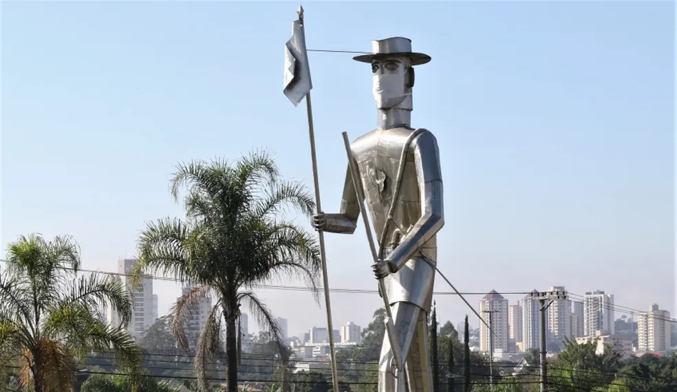
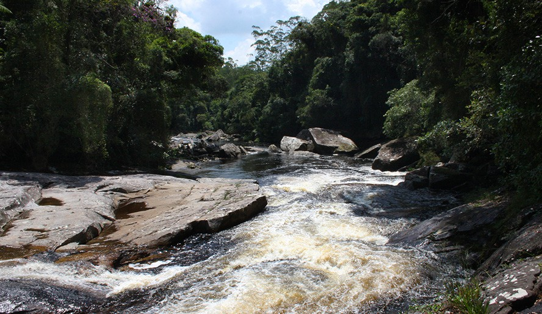
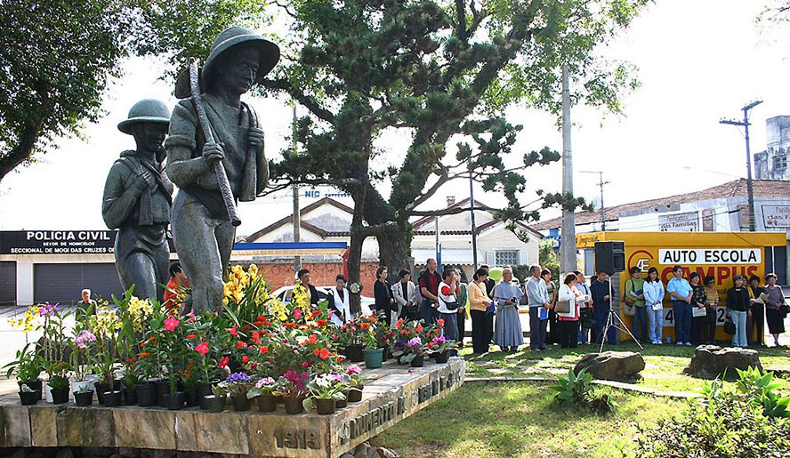

Mogi das Cruzes
Atrativos Turisticos
Monumento Bandeirante

Representa o bandeirante Gaspar Vaz, fundador da cidade em 1º de setembro de 1560.
Parque das Neblinas

O Parque das Neblinas é uma reserva ambiental de 7 mil hectares de Mata Atlântica,
oferece atividades de ecoturismo, educação ambiental e pesquisa científica.
Monumento do Imigrannte Japonês

O Monumento Imigrante Japonês, é uma homenagem a contribuição da comunidade japonesa para o desenvolvimento
agrícola da região.